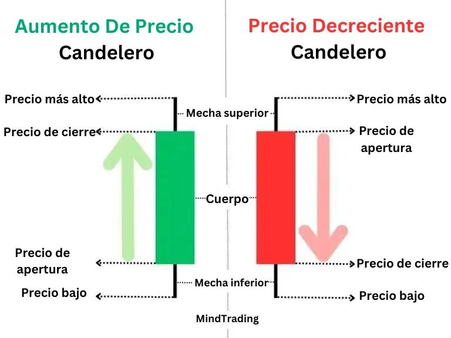

Los gráficos de candelabros incluyen numerosos candeleros que muestran cuatro aspectos importantes del precio de una acción en un período de tiempo dado: el precio de apertura, precio de cierre, precio más alto y precio más bajo.

Cada candelabro suele consistir en dos partes:
Cuerpo: La parte media grasa, es la parte más crucial del candelabro. Representa la diferencia entre los precios de apertura y cierre. El cuerpo de candelabros bullish (en ascenso) con un precio de apertura más bajo y el precio de cierre más alto, suele ser verde o lleno. Los candelabros bearish (declinando), por otro lado, a menudo tienen un cuerpo rojo o hueco, lo que representa un precio de apertura más alto y un menor precio de cierre.
Shadow/Wick: Estas líneas se ven por encima y por debajo del cuerpo, representando los precios más altos y más bajos durante el período de tiempo. Sin embargo, dependiendo de las acciones de precio, no todos los candelabros pueden tener dos pendientes.
Ejemplo: Considere seis candelabros de Adani Enterprises en un período de 15 minutos. El primer candelabro, de color verde, muestra que abrió a 1837 y cerró a 1860.10, lo que indica una tendencia ascendente. El precio más alto en estos 15 minutos fue de 1875, y el precio más bajo fue de 1828, todos estos detalles se muestran a través de pendientes.

El segundo candelabro comienza en 1860.80, cierra en 1850.10 y es rojo, lo que indica una disminución de los precios. Aquí, el precio de cierre y el precio más bajo coinciden, por lo que no hay ningún problema.
El tercer candelabro no tiene cuerpo ya que el precio de apertura y de cierre son los mismos. La explicación del resto de los candelabros es sencilla a partir de estos ejemplos.